전자산업기사 (2014-03-09 기출문제)
1과목: 전자회로
1. 발진기에 대한 설명 중 옳지 않은 것은?
- 직류를 공급하여 교류를 얻어내는 회로를 말한다.
- 발진기는 부궤환(negative feedback) 특성을 이용한다.
- 정상적인 발진을 위해서는 Barkhausen의 발진조건을 만족시켜야 한다.
- 선택도 Q가 큰 동조회로를 사용할수록 주파수 안정도가 양호하다.
(정답률: 77%)

2. 다음과 같은 연산증폭기의 전압이득은? (단, Ri=2[MΩ], Rf=1[MΩ]이다.)
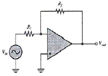
- 0.5
- -0.5
- 2
- -2
(정답률: 85%)
3. 부궤환 증폭기의 일반적인 특징에 대한 설명으로 옳지 않은 것은?
- 왜곡의 감소
- 잡음의 감소
- 대역폭의 증가
- 안정도의 감소
(정답률: 84%)
4. 트랜지스터를 증폭기로 사용할 때의 동작 영역으로 옳은 것은?
- 차단영역
- 포화영역
- 활성영역
- 비포화영역
(정답률: 80%)
5. 다음 중 슬루율(slew rate)의 단위로 가장 적합한 것은?
- [A/㎲]
- [W/㎲]
- [㎼/㎲]
- [V/㎲]
(정답률: 88%)
6. 다음 중 정현파 발진회로가 아닌 것은?
- 동조형 발진회로
- 콜피츠 발진회로
- 이상형 RC 발진회로
- 톱니파 발진회로
(정답률: 83%)
7. 다음 중 연산증폭기의 스위칭 특성에 가장 크게 영향을 주는 것은?
- 입ㆍ출력 임피던스
- 슬루 레이트
- 출력 오프셋 전압
- 동위상제거비(CMRR)
(정답률: 85%)
8. 전력증폭기의 직류 공급 전압은 15[V], 전류는 300[mA]이고, 효율은 80[%]일 때 부하에서의 출력 전력은?
- 3.6[W]
- 4.5[W]
- 36[W]
- 450[W]
(정답률: 72%)
9. 직렬 전류 궤환증폭기의 궤환신호 성분은?
- 전압(voltage)
- 전류(current)
- 커패시터(capacitor)
- 인덕터(inductor)
(정답률: 76%)
10. 다음 중 B급 push-pull 증폭회로의 장점으로 옳지 않은 것은?
- Cross over 왜곡이 발생하지 않는다.
- 공급전원의 리플전압이 출력에 나타나지 않는다.
- 출력파형의 일그러짐이 작다.
- 출력 변압기의 철심이 자기 포활될 우려가 없다.
(정답률: 81%)
11. 다음 변조 방식 중 불연속변조방식은?
- AM
- FM
- PCM
- PM
(정답률: 85%)
12. 다음에서 피변조파 V = Vc (1+m cosωt) sinωt 이며, 반송파의 진폭은 4[V], 변조도는 50[%]인 경우 직선검파를 할 때 부하저항에 나타나는 신호파의 실효치 전압은 몇 [V]인가? (단, 효율 η는 90[%]임)
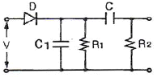
- 0.37[V]
- 1.27[V]
- 2.25[V]
- 3.4[V]
(정답률: 71%)
13. 다음 중 신호레벨에 따라 펄스폭을 변화시키는 펄스변조 방식은?
- PAM
- PWM
- PPM
- PCM
(정답률: 77%)
14. 궤환 발진기의 발진 조건에 대한 설명 중 옳지 않은 것은? (단, A는 증폭도, β는 궤환량이다.)
- 정궤환을 이용한다.
- A의 위상 변화는 180°이다.
- β의 위상 변화는 0°이다.
- 궤환 이득 Aβ=1이며, 위상 변화는 0°이다.
(정답률: 73%)
15. RC 결합 증폭기에서 주파수 대역폭을 1/2로 줄이면 증폭 이득은 약 얼마나 증가하는가?
- 1[dB]
- 3[dB]
- 6[dB]
- 10[dB]
(정답률: 72%)
16. 다음 그림의 회로에서 출력 전압은 얼마인가?
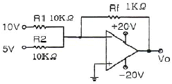
- -1.5[V]
- -5[V]
- -10[V]
- -15[V]
(정답률: 75%)
17. PN 접합에서 역방향 전압이 5[V]에서 10[V]로 증가하면 공핍층은 어떻게 되는가?
- 더 작아진다.
- 접합부위가 냉각된다.
- 영향을 받지 않는다.
- 더 커진다.
(정답률: 82%)
18. 시스템의 출력 펄스에서 오버슈트(overshoot)가 발생하는 이유는?
- 시스템의 하한 차단 주파수가 0인 경우
- 시스템이 전역 대역폭을 가지고 있는 경우
- 시스템이 고주파수의 고조파를 과도하게 강조할 경우
- 시스템이 저주파수의 고조파를 과도하게 강조할 경우
(정답률: 84%)
19. 다음 중 전계 효과 트랜지스터(FET)에 대한 설명으로 적합하지 않은 것은?
- 전압 제어용 소자이다.
- BJT보다 열적으로 안정하다.
- BJT보다 잡음특성이 양호하다.
- BJT보다 이득대역폭 적[GㆍB]이 크다.
(정답률: 83%)
20. 다음 중 진폭 변조와 비교한 주파수 변조의 특징이 아닌 것은?
- S/N 비가 개선된다.
- 저전력 변조가 가능하다.
- 타국으로부터 혼신 방해 정도가 경감된다.
- 수신 전기장 세기의 강약에 영향을 많이 받는다.
(정답률: 60%)
2과목: 전기자기학 및 회로이론
21. 반지름 a(m)인 접지 구도체의 중심으로부터 d(m)인 곳에 점전하 Q(C)가 있다면 구도체에 유기되는 전하량은 몇 [C]인가? (단, d>a이다.)
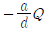
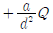
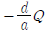
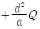
(정답률: 63%)
22. 진공 중의 반지름 2[m]인 도체구 A와 내외 반지름이 4[m] 및 5[m]인 도체구 B를 동심으로 놓고, 도체구 A에 QA=2×10-8[C]의 전하를 대전시키고 도체구 B의 전하는 0으로 했을 때 도체구 A의 전위는?
- 36[V]
- 45[V]
- 81[V]
- 90[V]
(정답률: 66%)
23. 자기인덕턴스가 0.5[H]인 코일에 1/200 초 동안에 전류가 25[A]로부터 30[A]로 늘었다. 이 코일에 유기된 기전력의 크기는 몇 [V]이며, 그 방향은 어떻게 되는가?
- 250[V]로서 전류와 같은 방향
- 250[V]로서 전류와 반대 방향
- 500[V]로서 전류와 같은 방향
- 500[V]로서 전류와 반대 방향
(정답률: 64%)
24. 진공 중에서 두 점자극의 자하가 각각 m1=2×10-5[Wb], m2=2×10-5[Wb]일 때, 두 점자극을 잇는 직선의 중심에서 자계의 세기는? (단, 두 점자극간의 거리는 2[m]이다.)
- 0[AT/m]
- 1.27[AT/m]
- 2.53[AT/m]
- 3.79[AT/m]
(정답률: 71%)
25. 점 P(1,2,3)m와 Q(2,0,5)m에 각각 4×10-5[C]과 2×10-4[C]의 점전하가 있을 때, 점 P에 작용하는 힘은 몇 [N]인가?
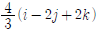
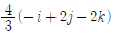
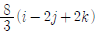
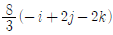
(정답률: 65%)
26. 감자력과의 관계로 옳은 것은?
- 자속(Φ)에 반비례한다.
- 자계(H)에 반비례한다.
- 자화의 세기(J)에 비례한다.
- 자극의 세기에 반비례한다.
(정답률: 77%)
27. 동일 용량 C(μF)의 콘덴서 n개를 병렬로 연결하였다면 합성용량은 얼마인가?
- n2C
- nC
- C/n
- C
(정답률: 76%)
28. 다음 중 도전율의 단위는?
- m/Ω
- Ω/m2
- V/m
- ℧/m
(정답률: 77%)
29. 면적이 S(m2) 극판간격이 d(m) 유전율이 ε(F/m)인 평행판 콘덴서에 V(V)의 전압이 가해졌을 때 축적되는 전하 Q는?
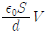
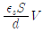
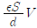
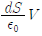
(정답률: 63%)
30. 주파수가 1[GHz]인 전자기파는 공기 중에서의 파장이 몇 [m]인가?
- 0.3
- 0.4
- 0.5
- 0.6
(정답률: 67%)
31. 정 K형 여파기에서 공칭 임피던스 K와 2개의 임피던스 Z1, Z2간에는 어떤 관계가 성립하는가?
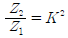
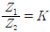
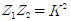
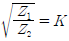
(정답률: 80%)
32. 특성 임피던스 Zo=300[Ω]의 선로에 부하저항 ZL=500[Ω]을 접속했을 때, 전압 정재파비 S는 약 얼마인가?
- 1.25
- 1.67
- 3.25
- 4.8
(정답률: 71%)
33. 다음과 같은 파형을 라플라스 변환을 하면?
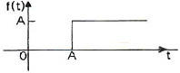
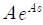
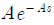
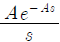
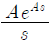
(정답률: 78%)
34. "몇 개의 전압원과 전류원이 동시에 조재하는 회로망에 있어서 회로 전류는 각 전압원이 각각 단독으로 가해졌을 때(다른 전류원은 개방, 전압원은 단락시킴) 흐르는 전류를 합한 것과 같다."라는 것은?
- 노톤의 정리
- 키르히호프의 법칙
- 테브난의 정리
- 중첩의 원리
(정답률: 82%)
35. 그림과 같은 회로로 입력 파형을 미분하기 위한 입력 파형의 주기 T와 회로의 시정수 RC 사이의 조건은?
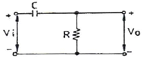
- T ≪ RC
- T ≫ RC
- T = RC
- T ≤ RC
(정답률: 69%)
36. 단위 길이 당 임피던스 및 어드미턴스가 각각 Z 및 Y인 전송 회로에서 반복 전달정수의 값은?
- ZY
- √(ZY)
- 1/(ZY)
- 1/√(ZY)
(정답률: 68%)
37. T형 회로의 임피던스 파라미터 Z11로 옳은 것은?
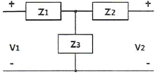
- Z3
- Z1+Z2
- Z2+Z3
- Z1+Z3
(정답률: 73%)
38. 다음 회로에서 90[Ω]에 흐르는 전류 I는?
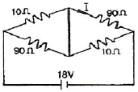
- 1[A]
- 0.9[A]
- 0.2[A]
- 0.1[A]
(정답률: 61%)
39. 진폭이 400√2[V]이고, 주기가 0.01[초]인 정형파 교류의 주파수는 몇 [Hz]인가?
- 100[Hz]
- 200[Hz]
- 400[Hz]
- 200π[Hz]
(정답률: 61%)
40. 그림과 같은 교류 회로의 역률은 약 얼마인가?
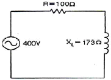
- 0.5
- 0.6
- 1.0
- 1.7
(정답률: 57%)
3과목: 전자계산기일반
41. 하드웨어 제어를 위한 기능을 주로 수행하며 시스템 프로그램 작성에 가장 적합한 언어는?
- BASIC 언어
- FORTRAN 언어
- PASCAL 언어
- C 언어
(정답률: 69%)
42. C 언어에서 사용하는 데이터형이 아닌 것은?
- int
- long
- short
- character
(정답률: 79%)
43. 다음 그림과 같은 순서도는?
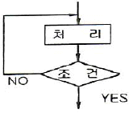
- 분기형
- 직선형
- 루프형
- 순차직선형
(정답률: 82%)
44. 다중프로그래밍(multi-programming)에 대한 설명으로 옳지 않은 것은?
- 컴퓨터의 느린 입출력 속도와 처리속도가 빠른 CPU 사이의 속도차이를 이용하여 컴퓨터의 처리효율을 증가시킨다.
- 컴퓨터의 주기억장치만 분할하고 CPU를 공동으로 사용한다.
- CPU를 두 개 이상 두고 동시에 여러 프로그램을 수행할 수 있다.
- 하나의 CPU가 여러 프로그램을 수행하여 전체적인 컴퓨터의 처리능력을 증가시킨다.
(정답률: 75%)
45. 다음 중 집적회로(IC)의 장점이 아닌 것은?
- 가격이 싸다.
- 크기가 작다.
- 전력소비가 작다.
- 신뢰성이 낮다.
(정답률: 81%)
46. 인터럽트를 발생하는 장치들을 직렬로 연결하여 우선순위에 따라 처리하게 하는 방식은?
- 다중채널 방식
- Daisy-chain 방식
- Polling 방식
- Interrupt Control 방식
(정답률: 67%)
47. 8진수 45.67을 16진수로 변환하면?
- 25.DC
- 37.59
- 91.D2
- 97.37
(정답률: 73%)
48. "Accumulator, 가산기, 보수기"와 관계가 있는 장치는?
- 제어장치
- 연산장치
- 기억장치
- 출력장치
(정답률: 82%)
49. 마이크로컴퓨터 내부의 버스에 해당하지 않는 것은?
- data bus
- control bus
- address bus
- shift bus
(정답률: 72%)
50. 멀티미디어 응용프로그램들의 실행을 좀 더 빠르게 할 수 있도록 설계된 것은?
- 비트 슬라이스 마이크로프로세서
- 배열 처리기
- MMX
- AMD
(정답률: 75%)
51. RISC 컴퓨터에 대한 설명으로 틀린 것은?
- 비교적 느린 메모리와 빠른 클록
- 고정된 길이의 명령어 제공
- 하드와이어드 방식의 프로세서와 소프트웨어로 구성
- 한 사이클에 명령을 수행하도록 구성
(정답률: 72%)
52. 컴퓨터에서 명령문이 시행될 때 다음에 시행할 명령문의 주소는 어디에 두는가?
- Program Counter
- MAR(Memory Address Register)
- Cache
- Instruction Register
(정답률: 72%)
53. 3-초과 코드(excess-3 code)에 대한 설명 중 옳은 것은?
- 가중치 코드이다.
- 10진 연산에 사용할 수 없다.
- 자보수적(self-complement) 성질을 가지지 않는다.코
- 8421 코드에 10진수 3을 더해서 만들어지는 코드이다.
(정답률: 78%)
54. 산술 및 논리 연산의 결과를 일시적으로 기억하는 것은?
- Instruction 레지스터
- Shift 레지스터
- Accumulator
- Index 레지스터
(정답률: 77%)
55. 다음에 읽어야 할 명령이 들어있는 주소를 기억하는 레지스터는?
- PC
- IR
- AC
- MAR
(정답률: 72%)
56. 컴파일 기법의 언어가 아닌 것은?
- COBOL
- BASIC
- C
- FORTRAN
(정답률: 55%)
57. 전가산기에서 입력 A=1, B=1, Ci=0일 때, 출력 S(sum)와 C(carry)의 값으로 옳은 것은?
- S=0, C=0
- S=0, C=1
- S=1, C=0
- S=1, C=1
(정답률: 75%)
58. 스택 구조의 컴퓨터에서 메모리에 아이템을 넣는 동작은?
- PUSH
- POP
- INFIX
- PREFIX
(정답률: 80%)
59. 명령어의 주소부에 데이터를 직접 넣어주는 방식은?
- 직접(direct) 주소지정
- 즉시(immediate) 주소지정
- 상대(relative) 주소지정
- 레지스터(register) 주소지정
(정답률: 67%)
60. 소프트웨어적인 방법으로 인터럽트 요청신호 플래그를 차례로 검사하여 인터럽트의 발생 위치를 찾는 방식은?
- 데이지체인 방식
- 폴링 방식
- 레지스터 방식
- 스트로브 방식
(정답률: 76%)
4과목: 전자계측
61. 교류 100Vrms 전압을 오실로스코프로 측정했을 때 이 교류의 첨두치(peak to peak) 전압은 약 몇 [V]인가?
- 100[V]
- 141[V]
- 200[V]
- 282[V]
(정답률: 63%)
62. 전압계와 전류계를 다음 그림과 같이 접속하고 부하 전력을 측정하려 한다. 이들 계기의 지시가 각각 100[V], 4[A]일 때의 부하 전력은 몇 [W]인가? (단, 전압계의 내부 저항은 1000[Ω]이다.)(오류 신고가 접수된 문제입니다. 반드시 정답과 해설을 확인하시기 바랍니다.)
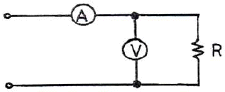
- 390[W]
- 490[W]
- 510[W]
- 540[W]
(정답률: 59%)
63. 그림과 같은 회로에서 구형파를 입력에 인가하고 오실로스코프로 출력파형을 관측하면 어떤 파형이 나타나는가?
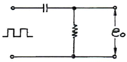
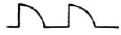
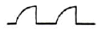
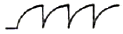
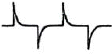
(정답률: 81%)
64. 참값(T)이 500[V], 측정값(M)이 502.5[V]일 때 보정율은?(오류 신고가 접수된 문제입니다. 반드시 정답과 해설을 확인하시기 바랍니다.)
- -0.5
- 0.5
- -0.0⑤
- 0.0⑤
(정답률: 64%)
65. 감도가 높고, 정밀한 측정을 요구하는 경우 사용하는 측정법 중 가장 적절한 것은?
- 직편법
- 편위법
- 영위법
- 반경법
(정답률: 78%)
66. 진동편형 주파수계의 특징 중 옳지 않은 것은?
- 지시의 신뢰성이 높다.
- 100[Hz] 이하에서 사용된다.
- 주파수의 변화에 따른 응답을 한다.
- 구조가 간단하고, 전압의 파형에 영향이 없다.
(정답률: 43%)
67. 디지털 계기에서 A/D 변환기의 주요 특성에 속하지 않는 것은?
- 정밀도
- 분해능
- 변환시간
- 입력형태
(정답률: 62%)
68. 역률이 0.001인 콘덴서의 Q는?
- 10
- 100
- 1000
- 10000
(정답률: 79%)
69. 오실로스코프(Oscilloscope)로 측정할 수 없는 것은?
- 코일의 Q
- 위상 측정
- 왜곡률 측정
- 변조도 측정
(정답률: 82%)
70. 측정자의 눈금 오독 혹은 실수에 의해 발생하는 오차는?
- 우연 오차
- 과실 오차
- 이론 오차
- 계통 오차
(정답률: 76%)
71. 다음 중 소인 신호발진기의 구성부가 아닌 것은?
- 리액턴스 관
- 진폭 제한기
- 톱니파 발진기
- 주파수 변별기
(정답률: 62%)
72. 고주파 회로를 측정할 때 주의할 사항으로 옳지 않은 것은?
- 차폐 및 접지를 철저히 시킬 것
- 표유 임피던스를 크게 할 것
- 주파수대에 적합한 회로 소자를 사용할 것
- 계기 또는 회로의 임피던스 정합에 주의할 것
(정답률: 75%)
73. 다음 중 교류브리지의 종류가 아닌 것은?
- Wheatstone bridge
- Wien bridge
- Maxwell bridge
- Schering bridge
(정답률: 63%)
74. 공진회로를 갖는 고주파 가변발진기로서 발진부의 그리드 전류의 변화로 공진주파수를 측정하는 계기는?
- 그리드딥 미터
- 나비형 주파수계
- 계수형 주파수계
- 헤테로다인 주파수계
(정답률: 67%)
75. 다음은 진폭변조 회로의 출력을 오실로스코프로 측정한 결과이다. a=3b이면 변조율은?
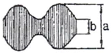
- 25[%]
- 50[%]
- 75[%]
- 100[%]
(정답률: 75%)
76. 오실로스코프와 조합하여 FM 수신기의 주파수 변별기 등 각종 고주파 회로의 주파수 특성 및 대역 조정에 이용되는 발진기는?
- CR 발진기
- 음차 발진기
- 비트(beat) 발진기
- 소인(sweep) 발진기
(정답률: 75%)
77. 서보 모터를 사용하는 기록계기는?
- 타점식
- 펜식
- 자동평형식
- 직동식
(정답률: 74%)
78. 기록계기에 관한 설명 중 옳지 않은 것은?
- 펜식, 타점식, 자동평형식 등이 있다.
- 변화하는 값을 긴 시간동안 연속 측정하여 기록하는 계기이다.
- 변화하지 않는 값을 단시간에 측정하고 기록에 남기지 않는 계기이다.
- 펜식은 1.5급, 타점식은 1.0급, 자동평형식은 0.5급 정도이다.
(정답률: 77%)
79. 다음 중 홀(Hall) 기전력 V와 자장의 세기 H 및 전류 I 사이의 관계에 대한 것으로 옳은 것은?
- V는 H 및 I에 비례한다.
- V는 H 및 I에 반비례한다.
- V는 H에 비례하고 I에 반비례한다.
- V는 H 및 I에 아무런 관계가 없다.
(정답률: 67%)
80. 계기 정수 2400[회/kWh]의 적산 전력계가 30초에 20회전 했을 때의 전력은?
- 1250[W]
- 1000[W]
- 750[W]
- 500[W]
(정답률: 50%)
발진기는 부궤환(negative feedback) 특성을 이용하여 자기 자신을 유지하면서 일정한 주파수의 교류를 발생시키는 회로이다. 이를 위해서는 Barkhausen의 발진조건을 만족시켜야 하며, 선택도 Q가 큰 동조회로를 사용할수록 주파수 안정도가 높아진다.